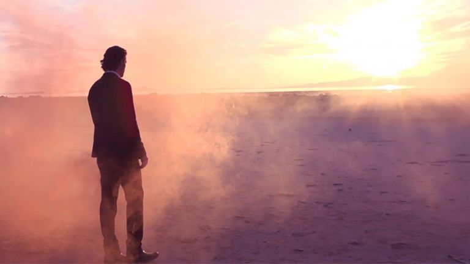

Church video
Hear Him: Listen to the Voice of Jesus Christ
Pause with this invitation to listen to Christ. What helps you give His words your attention?
The Church of Jesus Christ of Latter-day Saints
Art & Study

“Be still, and know that I am God” appears in a psalm filled with upheaval. Its stillness is not denial of trouble; it is trust in God in the middle of it.
Psalm 46 begins with God as a refuge and strength in trouble. The earth shakes, waters roar, and kingdoms are unsettled. The closing invitation to be still follows a description of God bringing wars to an end. Read the whole psalm to hear its movement from upheaval to confidence in the Lord's presence.
The words about knowing God belong with the rest of verse 10, which declares that He will be exalted among the nations and in the earth. The focus is larger than a moment of personal calm: the psalm points to God's authority and His presence with His people.
In Mark 4, the disciples encounter a storm while Jesus sleeps in the boat. They wake Him in fear. He rebukes the wind and speaks to the sea, and a great calm follows. Their final question turns toward His identity: who is this, that wind and sea obey Him?
For personal reflection, notice both the disciples' fear and their decision to turn to Jesus. This account invites study of His power and our trust in Him; it does not set a timetable for the end of every difficulty.
In John 14:27, Jesus offers His peace and distinguishes it from what the world gives. Read that promise alongside the storm account. What might it mean to seek the Savior's peace while a question remains unresolved?
Luke 10:38-42 describes Mary listening at the Savior's feet while Martha is occupied with serving. Jesus affirms Mary's choice to hear His word. Beside the image on the Ask page, this passage offers a natural question: what deserves my attention today?
Stillness need not mean waiting for instructions about every decision. Doctrine and Covenants 58:26-28 teaches that people should do good willingly and use their agency. As a personal application, consider a responsibility you can fulfill now while continuing to pray about what remains uncertain.
Read Doctrine and Covenants 58:26-28
Doctrine and Covenants 101:16 repeats the invitation to be still while offering comfort concerning Zion. Its assurance rests in God's care and authority. Study the surrounding verses to see how comfort and the promise of gathering accompany that invitation.
Use these optional prompts in a journal or quiet conversation. They are reflection exercises, not a formula for receiving an answer.
Read Psalm 46 slowly. Write down one description of God and the verse where you found it. How does that description speak to a concern you are carrying?
Name one useful action within your responsibility today. Then name an outcome you cannot control. Consider how prayer and responsible action can accompany each other.
Read about Mary in Luke 10. Choose one distraction to set aside briefly so you can listen, study, or be present with someone who needs you.
Return to the passage without requiring yourself to produce a particular feeling. You can write an honest question, continue your ordinary responsibilities, and speak with someone you trust. Use the linked study pages to explore prayer and faith more deeply.
Watch, read, and reflect
These official Church resources offer another way to explore this subject. Read or watch at your own pace, then return to the passages above.
Church video
Pause with this invitation to listen to Christ. What helps you give His words your attention?
The Church of Jesus Christ of Latter-day Saints

Church video
Follow one person’s experience of seeking God. Use it as a reflection on patience, without assuming every person’s story will unfold the same way.
The Church of Jesus Christ of Latter-day Saints